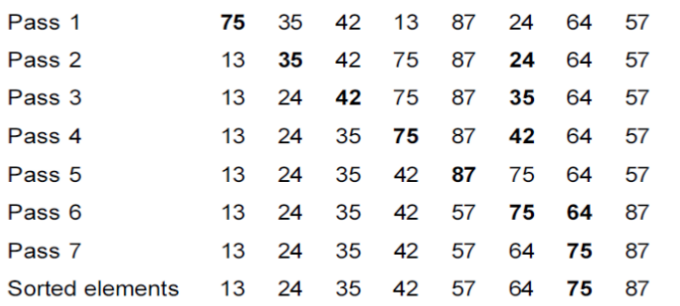

Let us take an example of the following elements.
75 35 42 13 87 24 64 57Here apply the Selection sort algorithm to sort the elements.
def selection_sort(list):
for i in range(len(list)):
min = i
for j in range(i+1, len(list)):
if list[min] > list[j]:
min = j
temp = list[i]
list[i] = list[min]
list[min] = temp
list=[75,35,42,13,87,24,64,57]
selection_sort(list)
print(list)